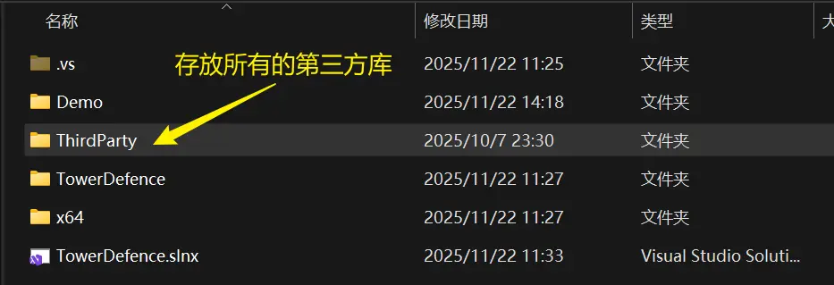
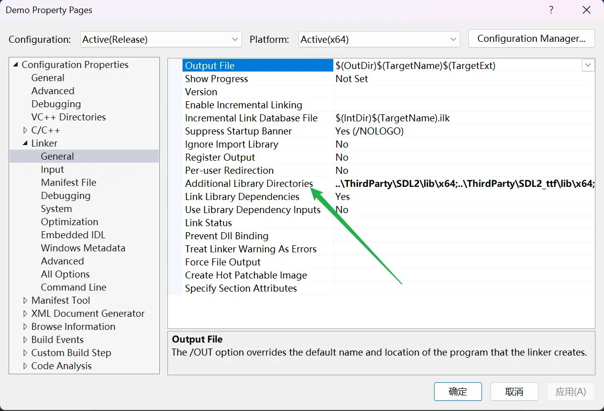
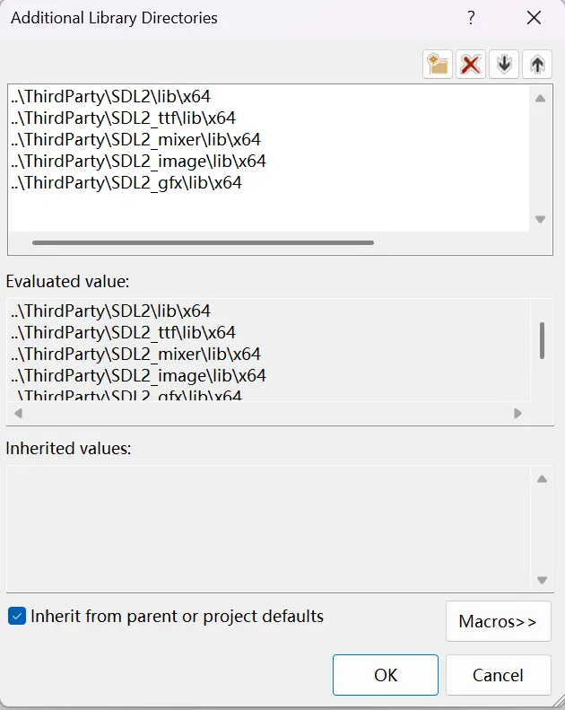
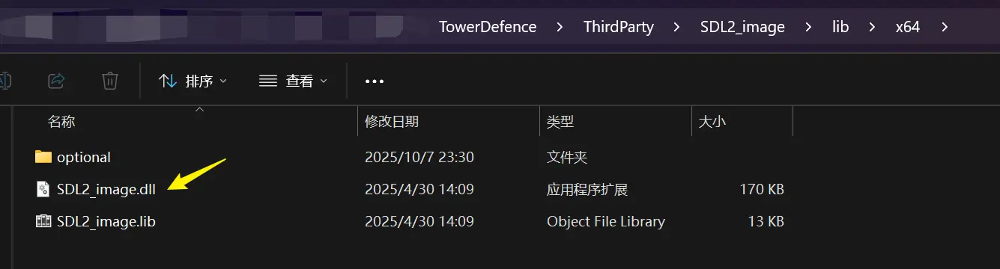
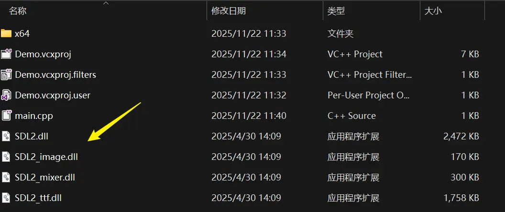
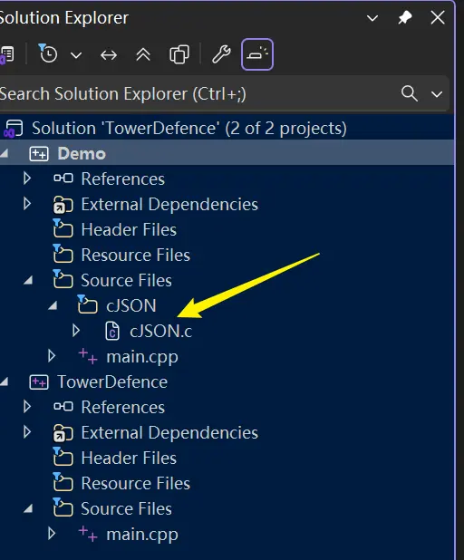

课程来源：B站-Voidmatrix
SDL程序库
简介
SDL全名是“Simple Direct Media Layer”，是一个简易的媒体层。它允许我们在不同的操作系统或者硬件平台上运行同一套函数，也就是说，用SDL编写的项目在完成后可以在不同的平台上编译运行。它的接口是C语言写的，非常简明。此套课程常用的SDL库包括SDL image、ttf、mixer等，比如要做图片解码就是用SDL image，需要播放音乐就用SDL mixer。此外，SDL还包含SDL Renderer，它是一个渲染器，对底层（OpenGL、Vulkan、DX等）渲染接口的封装。在不同的平台上，SDL有不同的渲染后端支持不同的渲染接口。
SDL是经过行业验证的，很多游戏引擎和作品都是在SDL基础上做的，是一个很成熟的技术。
获取/ 下载
进入SDL的GitHub仓库，点击进入“Releases”下的最新版本“Latest”。

进入后根据自己的电脑系统选择需要的版本。此项目因为使用的是SDL2（目前已经有了SDL3），所以选择最新的以2开头的版本即可。此项目中使用visual studio开发，所以选择下面版本。

同理安装 SDL_ttf（文本渲染）、SDL_image（图片渲染）、SDL_mixer（音频解码）、SDL_gfx（简单的图元绘制），注意此项目安装的全部是SDL2对应的版本，如果SDL安装的是SDL3，上述库也应该安装3对应的版本；另外图元绘制在一个单独的网站上，前三个都在GitHub上。
此外，还需要 cJSON，也用类似方法获取。
开发环境搭建
通用配置
右击项目名称（注意不是“解决方案名称”），找到“属性”，找到C/C++下的“代码生成/ Code Generation”，将“运行库/ Runtime Library”改为“MT”，点击对话框右下角的“确定”或“应用”。这样可以避免程序在一些没有安装VS或者C++相关库的电脑上发生dll缺失的报错。

配置第三方库
将SDL的相关文件统一放到一个文件夹中，方便后续管理。在下面的示例中，解决方案的名字是“TowerDefence”，它下面有两个项目/ Project，分别是“Demo”和“TowerDefence”。

接下来按照C++编译的三个顺序：头文件、库文件、动态链接库分别进行相关设置。
头文件的配置
用和上面一样的方法打开“属性”界面，点击“C/C++”，右侧第一行，将相关的SDL相关的头文件添加其中。注意，因为默认添加时会用文件的绝对路径，为了灵活，我们将之改为相对路径：

完成后，VS就能识别 SDL.h 等头文件了。需要注意的是，由于SDL中也包括一个 main 函数，所以我们在最开头要添加这样一句 #define SDL_MAIN_HANDLED 来避免冲突。
|
|
链接器中库文件的设置
同样在“属性”界面，找到“Linker / 链接器”-“General / 常规”，右侧“Additional Library Directories”
由于我使用的电脑是64位（x64）的，所以32位的（x86）相关文件不会用到，可以直接删除（无需添加）。
动态链接库的设置
分别打开SDL各个文件夹中的“lib”文件夹，找到其中的dll文件，复制到项目文件夹（示例中是“Demo”项目）中。
 注意，由于gfx没有动态链接库，所以没有dll文件。
cJSON的设置
直接在“Solution Explore”界面-“源文件”下添加一个筛选器，将从JSON文件直接拖拽于此即可。
至此，SDL全家桶在Visual Studio中的配置全部完成。